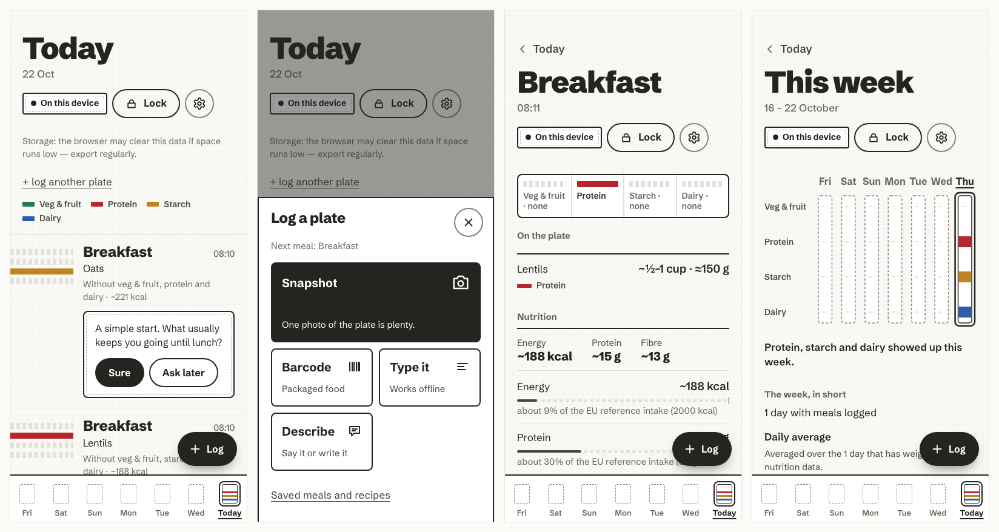

Know what’s on your plate. Keep it to yourself.
Log a meal by photo, barcode, a few typed words or your voice. Each one lands on the Day Board as one honest plate: its four food groups, grams and nutrients set plainly against EU reference intakes. The coach asks a question, never a verdict.
One command
$bin/ai-nutrition-coach upNo accountEncrypted on your device, opened by your passphrase
Zero telemetryNothing leaves unless you send it
AI optionalYour own key, the instance’s, or none

The coachone question
This yogurt has about 18 g of sugars, around a fifth of a day’s reference intake. Was it the one you meant?
Lunch · 12:40Demo
Lentil salad
~180 g410 kcal21 g protein
Veg & fruitProteinStarchDairy